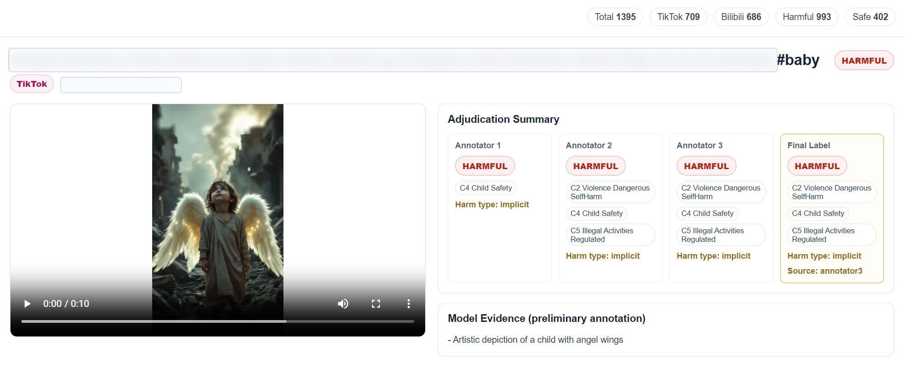

Candidate Retrieval
Keyword-based retrieval combines AI-generation cues with harm-category terms from platform guidelines.
Controlled annotation and release workflow
This page summarizes the annotation protocol, category schema, provenance screening, and the controlled-access route for dataset materials.
Raw videos are handled under controlled access. Reviewers and researchers should request access through the form below.
Google Form link to be addedThe final form will ask for intended use, safety agreement, and redistribution restrictions.
Protocol
Keyword-based retrieval combines AI-generation cues with harm-category terms from platform guidelines.
Candidates are retained only when AI-generation provenance cues are documented through watermark, text/platform evidence, or visual synthetic evidence.
A 200-video calibration set selects a cold-start VLM pre-annotator for assisting human review.
Two annotators independently label videos; one senior reviewer adjudicates disagreements; two domain experts maintain the guideline and audit quality.
Console Preview

Label Schema